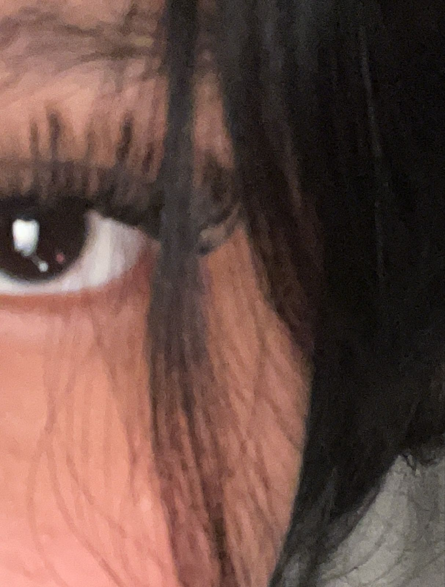

Desde el día que llegaste a mi vida, desde que te conocí o comenzamos a hablar, sentí una curiosidad enorme por verte y conocerte. Nunca creí que yo me estaba dando la oportunidad de conocerte, más bien, fuiste tú quien me dio esa oportunidad, y te lo agradezco profundamente. Desde que entraste en mi vida, me haces sentir tan bien. Mis días son más alegres, ahora tienen un propósito. Cambiaste tantas cosas; ahora tengo a alguien a quien darle los buenos días, a quien desearle las buenas noches. Tengo a alguien a quien consentir y hacer sentir bien.

Puedo decir que me he vuelto muy cursi por ti, y la verdad me encanta. Mi mundo contigo es completamente
diferente, y mi forma de ver las cosas y de pensar ha cambiado. Ahora, solo pienso en ti, todo el tiempo, día
y noche. No hay un momento en que no estés en mi mente, y eso me gusta más de lo que te imaginas. En verdad te
amo, y no puedo negarlo. Eres la razón por la cual mis días tienen sentido, por los cuales ya no son
aburridos. Mi momento favorito es cuando estamos intercambiando mensajes, cuando hablamos de todo.
Cada vez que te veo, me pones nervioso, y mi corazón late más fuerte por ti de lo que puedas imaginar. Ahora,
tú eres mi mundo, mi razón de ser, y no me arrepiento ni un segundo de haberte conocido. No me voy a cansar de
decirte lo mucho que te amo y lo feliz que me haces.